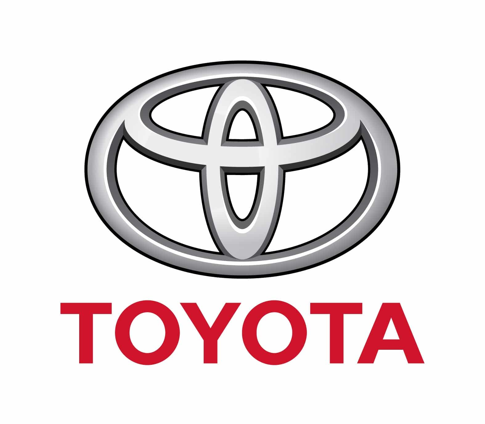

Дізнаємося дещо про Ford
Історія бренду
Ford Motor Company (укр. Форд Мо́тор Ко́мпані) — американська
автомобілебудівна компанія, виробник автомобілів марки «Форд». У 1903
компанію заснував Генрі Форд; штаб-квартира розташована в місті
Дірборн (штат Мічиган). Компанія здобула популярність, коли першою в
світі застосувала поточний метод виробництва: класичний
автоскладальний конвеєр. Президент — Алан Мулаллі.
Короткий опис двух моделей
Ford Mustang:Спортивний автомобіль: Легендарний маслкар з потужним
двигуном та спортивним дизайном. Модель: Існує в різних модифікаціях,
від класичного купе до кабріолету. Для кого: Для любителів швидкої
їзди та стильного дизайну. Ford Explorer:Позашляховик: Великий і
місткий позашляховик з прохідністю та комфортом. Модель: Доступний з
різними типами приводу та двигунами. Для кого: Для сімей та любителів
активного відпочинку.
Відгуки
Ford Mustang:подобається за потужний двигун та чудова керованість
забезпечують незабутні враження від водіння. Характерний рев двигуна
Mustang залишає мало кого байдужим. Заднє сидіння більше підходить для
дітей або коротких поїздок. Ford Explorer:Салон просторий, з великим
багажним відділенням, ідеально підходить для сімей. Багато корисних
функцій та систем безпеки. Потужніші версії мають високу витрату
палива.Повернутися до головного меню.

Цікаві факти про Тайоту
Історія бренду
Тойота Мотор Корпорейшн[6] (оригінальна назва: яп.
トヨタ自動車株式会社, Тойота Джідошя Кабушікіґайшя, «Акціонерне
товариство „Тойота-Мотор“»; офіційна англійська назва: Toyota Motor
Corporation) — японська автомобільна корпорація, що входить до складу
фінансово-промислової групи «Тойота». Одна з найбільших автомобільних
компаній світу. Випускає свою продукцію під різними марками, зокрема,
«Дайхацу», «Лексус», «Тойота», «Хіно».
Порівняння двох моделей
Toyota Corolla: Класичний седан або хетчбек, ідеальний для міста та
щоденних поїздок. Економічний і надійний.Може бути бінзиновим або
гібридним. Toyota Camry: Більш преміальний седан з просторим салоном і
потужними двигунами.Може бути бінзиновим або гібридним.
Відгуки
Toyota Corolla:Легко освоїти і паркувати.Має доступну ціну - це
однозначно плюс.Ця машина у користувані вже у мене понад 10 років й я
не знаю жодних проблем.Присутня шумність на високих швидкостях. Toyota
Camry:Має високий рівень пасивної й активної безпеки.Потужний двигун
забезпечує хорошу та надійну динаміку.Має інколи труднощі коли їду
через городо.Повернутися до головного меню.

Щось новеньке про BMW
Історія бренду
Bayerische Motoren Werke AG або скор. BMW (Баварські автомобільні
заводи, БМВ; вимовляється: Бе́-еМ-Ве́) — німецький автобудівний та
авіамоторний концерн і однойменна торгова марка автомобілів преміум-
та люкс-класу і мотоциклів.
Порівняння двох моделей
BMW X3: Популярний компактний кросовер, ідеальний для міської їзди та
невеликих подорожей. BMW X5: Повнорозмірний SUV, який поєднує в собі
потужність, комфорт та можливості позашляховика. BMW X7: Великий
семимісний SUV для великих сімей та довгих подорожей.
Відгуки
BMW X3 Стильний дизайн, широкий вибір двигунів, система повного
приводу xDrive, багате оснащення.BMW X5 Великий багажник, адаптивна
підвіска, широкий спектр опцій, преміальний інтер'єр.BMW X7 Величезний
салон з трьома рядами сидінь, панорамний дах, ексклюзивне оздоблення,
широкий набір асистентів водія.Повернутися до головного меню.